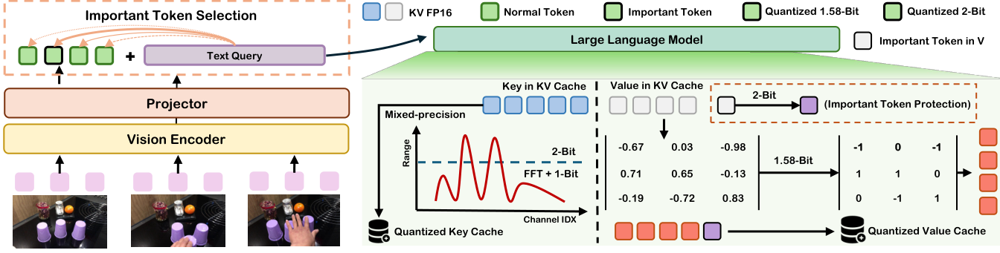
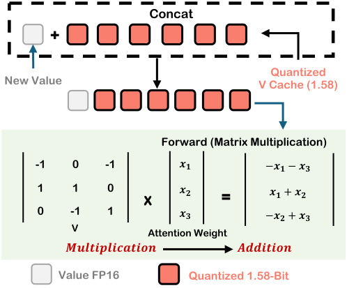

论文信息
| 问题 | 视频 token 数量大，使 Video LLM 在 prefill 后保留的 KV cache 成为显存与解码成本瓶颈。 |
|---|---|
| 一句话方法 | 对 Key 与 Value 分别设计低比特方案：Key 按通道混合 1/2-bit 并对 1-bit 部分做 FFT；Value 使用 1.58-bit 三值量化，并以文本相关性保护少量重要视觉 token。 |
| 定位 | 训练无关、可插拔的缓存容量优化；它不决定哪些事件应写入记忆，而是降低已保留视觉历史的 KV 存储成本。 |
1. 核心摘要
VidKV 面向长视频 Video LLM 的 KV cache：视觉帧被编码为大量 token，随着预填充和自回归解码持续保留的 Key/Value 会迅速占据显存。已有 KV 量化多从文本 LLM 的分布假设出发，通常止步于 2-bit；本文首先观察到视频 token 存在较高冗余，因此 2-bit 对性能影响很小，进而尝试将 KV 推到 1.x-bit。
核心设计是对 K 与 V 分治。Key cache 中少数异常通道不适合一刀切的 1-bit，故以 channel range 选出异常通道保留 2-bit，普通通道先经 FFT 再做 1-bit；Value cache 则使用三值 {-1, 0, 1} 的 1.58-bit 量化，并把与文本 query 高相关的视觉 token 改用 2-bit 保护。论文在 LLaVA-OneVision-7B 与 Qwen2.5-VL-7B、六个视频生成/理解基准上报告：1.5-bit Key 加 1.58-bit Value 可以接近 FP16 性能，且少量 token 保护可进一步补回精度。
2. 研究动机
视频上下文把 KV cache 变成主要瓶颈
在 Video LLM 的 prefill 阶段，system token、visual token 和 text token 一起经过每一层 Transformer；每层都写入 K 与 V。生成阶段的每个新 token 都要读取此前全部 K/V 做 attention，因此视频帧越多、视觉 token 越密，显存占用和数据访问越重。对于流式视频或多轮问答，简单增加上下文长度并不能解决这一线性增长。
文本 LLM 的量化规律不能直接照搬
本文分析指出，视频视觉 token 的冗余使 2-bit KV 量化几乎不伤性能，但 Key 与 Value 的分布特征不同：Key 的某些通道存在幅值较大、变化剧烈的异常值；Value 在 token 维度的差异更显著，且 per-channel 的处理比文本 KV 文献常用的 per-token 更合适。若统一使用一个位宽或同一分组轴，误差会集中落在模型真正依赖的通道或视觉证据上。
压缩不能平均牺牲语义证据
不是每个视觉 token 对当前文本问题都同等重要。对“杯子在哪里”这类 query，包含目标物体的 token 不能和背景 token 一样被激进量化。VidKV 因此把缓存容量优化与跨模态相关性接起来：大多数 token 获得低比特压缩，少量高相关 token 获得更高精度保护。这一点与 VLA 记忆中的“事件重要性决定资源预算”直接相关。
3. 方法论

原论文 Figure 2。视觉帧经编码后形成视觉 token；Key 分支按通道做混合位宽量化，Value 分支以 1.58-bit 为主并对重要 token 做高精度保护。
3.1 KV cache 的位置与总体数据流
设输入 token 为 X=concat[Xs, Xv, Xt]，其中分别对应 system、visual 与 text token。每个注意力层写入 K=XWk 与 V=XWv。解码时，新 token 的 query 要与历史 K 计算权重，再用该权重聚合 V。VidKV 不改模型权重或训练目标，而是在 cache 写入、存储和读取的路径替换量化/反量化表示，因此属于 plug-and-play 推理优化。
3.2 Key：range 驱动的混合精度与 FFT 1-bit
Key cache 的难点是异常通道。作者比较 variance、range 与 outlier count 来估计每个通道的量化难度，最终以 range 选择比例为 k 的异常通道：它们采用 2-bit；其余正常通道采用 1-bit。这样平均 Key 位宽可低于 2-bit，却不会把最难量化的通道也压到 1-bit。
对正常通道，作者先做 Fast Fourier Transform，使时域的尖锐振荡在频域更平滑、能量更集中，再进行二值化。论文将该路径写成 Q(Xfft)=sign(FFT(X))+1；反量化后以 IFFT 回到使用空间。缩放项取频域幅值均值，零偏置为零。论文报告这一步的计算额外开销低于 5%，但能显著减少普通 Key 通道的 1-bit 量化误差。
3.3 Value：1.58-bit 三值量化与 per-channel 结论
Value 采用 1.58-bit，即三值 {-1,0,1}。预填充时，以 α=γ·mean(|V|) 为阈值，量化形式为 Q(V)=sgn(V)·1[|V|>α]。解码阶段，attention weight 与三值 Value 的乘法可以化为加减，既节省存储，也有潜在计算收益。实验同时指出，Video LLM 的 Value cache 更适合 per-channel 而不是 per-token 量化；这一点与一些文本 LLM 结论相反。

原论文 Figure 3。新 Value 与已量化缓存拼接后，三值 Value 使 attention 的乘法可转化为加减运算。
3.4 Semantic Token Protection：把位宽给最相关视觉证据
仅靠 1.58-bit Value 仍会损伤少数关键视觉证据。Semantic Token Protection（STP）利用视觉 token 与文本 query 的 cross-modal attention，计算重要度 I=Xv(i)Xt(j)T；排名前 n=p·lv 的 token 以 2-bit 保存，其余维持 1.58-bit。STP 的资源含义很明确：提高 p 会增加平均位宽，但能优先保护回答问题所需的对象/动作 token。
3.5 与事件记忆的接口
VidKV 本身不做时间边界检测或长期检索，其 STP 分数也只对当前文本 query 有意义。对 VLA，更合适的组合是：先由 motion、appearance、robot state 决定某帧/事件是否应写入；对已经提交的事件 KV，再用 VidKV 的 channel-wise 量化与重要 token 保护降低成本。这样“写什么”与“怎么低比特保存”分属两个可独立评估的模块。
4. 实验与结果
设置。论文在 LLaVA-OneVision-7B 和 Qwen2.5-VL-7B 上测试，前者使用 8 张 RTX 4090、最多 32 帧输入，后者使用 8 张 A6000、最多 16 帧。任务覆盖 VideoDC、VideoChat-GPT、MovieChat、TempCompass、VATEX 和 WorldQA，刻意选择长文本生成类视频评测，而非只生成单词的 QA。
| 原文观察 / 对照 | 结果 | 解读 |
|---|---|---|
| FP16 → 2-bit KV | 两种 Video LLM 的性能可比或略高于 FP16。 | 视频 token 的高冗余给进一步降位宽留下空间。 |
| Key 1.5-bit + Value 1.58-bit | 在 LLaVA-OV 上接近无损；Qwen2.5-VL 在 TempCompass、VideoDC 有轻微下降。 | 更紧凑的视觉表示会使极低位宽的容错空间变小。 |
| Value 的分组轴（LLaVA-OV-7B 模拟量化） | 2/2-bit 下 per-channel：VideoDC 3.03、MovieChat 47.68；per-token：3.00、43.63。 | Value 的 per-channel 处理不是实现细节，而是性能关键。 |
| Key 1.5-bit 的通道选择指标 | Range：VideoDC 2.95、MovieChat 48.28；Variance：2.71、45.11；Outlier：2.51、32.87。 | range 更适合识别应保留 2-bit 的异常 Key 通道。 |
消融。Key 位宽从 1.75 逐步降到约 1.2-bit 时性能仅小幅变化，但低于约 1.2-bit 后显著下降，说明异常通道仍决定可压缩下限。STP 相比随机保护同样比例 token 更好；把少量 token 从 1.58-bit 升到 2-bit 后，平均位宽增加不足 0.1 bit，即可在多个基准恢复精度。FFT 1-bit Key 也在各基准上优于不使用 FFT 的对应配置。
5. 优势与局限
| 优势 | 局限与迁移注意点 |
|---|---|
|
|
6. 总结
VidKV 的核心贡献是表明：视频 KV 的冗余允许低于 2-bit 的缓存量化，但 Key 与 Value 不能共享同一策略。对 Key，应把难量化的异常通道留给 2-bit，并以 FFT 帮助普通通道做 1-bit；对 Value，应以 per-channel 三值量化为主体，再用文本相关性保护少量关键视觉 token。
对 VLA 历史记忆，最值得复用的是资源分配原则而不是将 STP 直接视为事件检测器：由事件模块先提交真正重要的状态转移，再在已提交 KV 内按通道难度与任务相关性分配位宽。这样可以把长程事件记忆的选择性与缓存后端的极低比特容量优化结合起来。